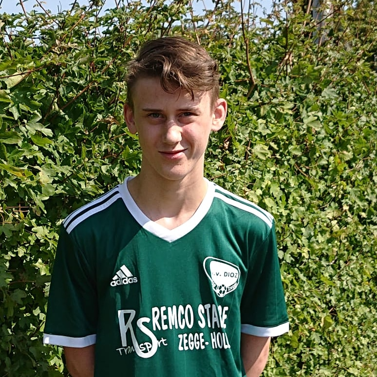
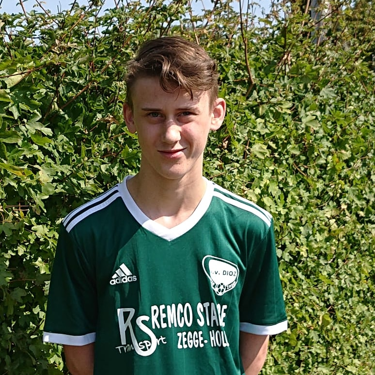

Wie ben ik?
Mijn naam is Robin Smits.
Ik ben 17 jaar oud en woon in Zegge.
Mijn vooropleiding was HAVO waar ik N&T deed op het markland college in Oudenbosch.
Mijn naam is Robin Smits.
Ik ben 17 jaar oud en woon in Zegge.
Mijn vooropleiding was HAVO waar ik N&T deed op het markland college in Oudenbosch.
Ik voetbal bij Dioz in zegge, ik voetbal bij de JO18-1 en speel ook regelmatig met de volwassen elftallen mee voornamelijk het 3e en 4e mee.
Op youtube upload ik video's waarin ik aan het gamen ben en die ik zelf heb bewerkt.
Ik upload de video's omdat ik plezier heb in het maken ervan en het leuk vind om het terug te kunnen zien.